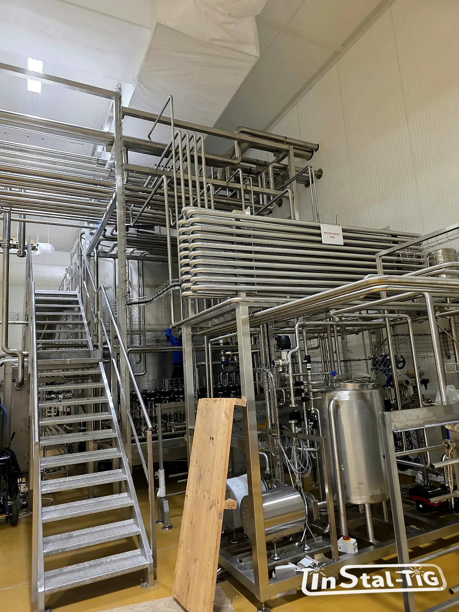

Pomosty i podesty przemysłowe: wymagania BHP dla barierek i schodów

Przy zbiornikach, pasteryzatorach, liniach rozlewniczych czy estakadach z rurami zawsze ktoś musi wejść wyżej: do zaworu, czujnika, włazu albo na przegląd. Do tego służą pomosty, podesty, schody i drabiny. To konstrukcje, przy których błędy szybko kończą się wypadkiem, więc obowiązują dla nich konkretne wymagania. Zbieramy najważniejsze z nich w jednym miejscu.
Jakie przepisy i normy mają znaczenie?
- Rozporządzenie w sprawie ogólnych przepisów bezpieczeństwa i higieny pracy (z 1997 r., z późniejszymi zmianami) określa m.in., jak zabezpieczać balustradami miejsca pracy i przejścia na wysokości.
- Normy PN-EN ISO 14122 (części 1–4) opisują stałe środki dostępu do maszyn: dobór rodzaju dojścia, pomosty i podesty, schody, drabiny schodowe, balustrady oraz drabiny stałe. Są normami zharmonizowanymi z dyrektywą maszynową, więc stosuje się je zwłaszcza przy dojściach do maszyn i urządzeń.
- Do tego dochodzą wymagania zakładu (często bardziej szczegółowe) i warunki techniczne dla budynków, gdy konstrukcja jest częścią obiektu budowlanego.
Które wymagania obowiązują w konkretnym przypadku, warto ustalić z działem BHP i projektantem przed zamówieniem.
Balustrady: wysokość, poprzeczka, krawężnik
Polskie przepisy BHP wymagają, żeby balustrada miała:
- poręcz na wysokości co najmniej 1,1 m,
- krawężnik (bortnicę) o wysokości co najmniej 0,15 m,
- poprzeczkę w połowie wysokości między poręczą a krawężnikiem albo wypełnienie tej przestrzeni, które nie pozwoli wypaść.
Norma PN-EN ISO 14122-3 dla dojść do maszyn także przewiduje poręcz na wysokości co najmniej 1,1 m, poprzeczkę (lub kilka) tak, żeby prześwity nie przekraczały 500 mm, i krawężnik o wysokości co najmniej 100 mm, z niewielką szczeliną przy podłodze. Gdy w grę wchodzą oba dokumenty, przyjmuje się zwykle wymaganie ostrzejsze, czyli krawężnik 0,15 m.
Balustrada musi też być dostatecznie wytrzymała: wytrzymać nacisk człowieka opierającego się albo wpadającego na nią. Dlatego liczy się nie tylko wysokość, ale też przekroje słupków, ich rozstaw i sposób mocowania do pomostu.
Schody: kąt, stopnie, poręcze
PN-EN ISO 14122-3 rozróżnia rodzaje dojść w zależności od kąta nachylenia: schody (do 45°), drabiny schodowe (strome, ok. 45–75°) i drabiny (ok. 75–90°). Pierwszeństwo mają schody, bo są najbezpieczniejsze, zwłaszcza gdy ktoś coś niesie.
- Zalecany kąt schodów to ok. 30–38°.
- Wysokość i głębokość stopni dobiera się według zależności 600 mm ≤ g + 2h ≤ 660 mm (g to głębokość stopnia, h jego wysokość), a wszystkie stopnie w biegu powinny być jednakowe.
- Szerokość biegu powinna wynosić co najmniej 600 mm, a lepiej ok. 800 mm, zwłaszcza na często używanych dojściach.
- Schody wyposaża się w poręcze. Przy biegu o większej szerokości lub wysokości poręcze daje się po obu stronach.
- Nad stopniami i pomostami potrzebna jest wolna wysokość przejścia (dla pomostów norma podaje zwykle co najmniej 2,1 m), żeby nie uderzyć głową w rury, kanały i konstrukcję.
Pomosty i podesty
- Szerokość przejścia zwykle co najmniej 600 mm, a gdy przejście jest często używane albo mijają się na nim ludzie, więcej.
- Balustrady na krawędziach, z których można spaść. Norma PN-EN ISO 14122-3 wymaga ich przy dojściach do maszyn, gdy wysokość upadku przekracza 500 mm; przepisy BHP mówią o miejscach powyżej 1 m. W praktyce decyduje ostrzejsze z wymagań i ocena ryzyka.
- Nawierzchnia antypoślizgowa: kraty pomostowe, blachy perforowane lub ryflowane. Na mokrych halach to podstawa bezpieczeństwa.
- Obciążenie: pomost dobiera się do tego, co będzie się na nim działo. Przejście serwisowe to co innego niż podest, na którym stawia się części, beczki czy narzędzia.
- Wejście na pomost: przy wejściu z drabiny lub w miejscu przerwy w balustradzie stosuje się furtki samozamykające albo inne zabezpieczenie przed wypadnięciem.
Warto wiedzieć: drabiny stałe to najmniej wygodne dojście. Norma dopuszcza je wtedy, gdy schodów lub drabiny schodowej nie da się zastosować, np. z braku miejsca. Przy większych wysokościach drabiny wymagają dodatkowej ochrony przed upadkiem, np. kosza, i podestów spoczynkowych.
Stal nierdzewna w strefach mokrych i higienicznych
W zakładach spożywczych pomosty i schody często stoją przy myciu, parze i chemii. Tam stal czarna malowana szybko traci powłokę, a łuszcząca się farba to zagrożenie dla produktu. Dlatego w takich strefach stosuje się stal nierdzewną. Warto też pamiętać o kilku zasadach higienicznych:
- otwarte kraty i spadki zamiast płaskich, zamkniętych powierzchni, na których stoi woda,
- szczelnie zaspawane profile zamknięte, bez otwartych końcówek, do których wchodzi brud i woda,
- jak najmniej poziomych półek i zakamarków trudnych do umycia,
- gatunek stali dobrany do środowiska. Przy chlorkach i intensywnym myciu lepiej sprawdza się 316L niż 304 (porównanie w artykule Stal 304 czy 316L?, a o przyczynach rdzy piszemy w tekście o korozji stali nierdzewnej).
Co przygotować przed zamówieniem?
- do jakich miejsc ma prowadzić dojście (zawory, włazy, czujniki, napędy) i jak często będzie używane,
- wysokość pomostu i dostępne miejsce na schody,
- jakie przepisy i wymagania zakładowe trzeba spełnić,
- czy konstrukcja stoi w strefie mokrej lub higienicznej,
- co będzie się na pomoście odkładać lub przenosić.
Rysunki, zdjęcia miejsca i wymiary możesz przesłać przez formularz Wycena online.
Potrzebujesz pomostu, podestu albo schodów?
Zadzwoń albo napisz. Powiedz, dokąd ma prowadzić dojście i w jakich warunkach będzie pracować, a doradzimy rozwiązanie i przygotujemy wycenę.
Zadzwoń: 667 466 431 Napisz e-mail Wycena online